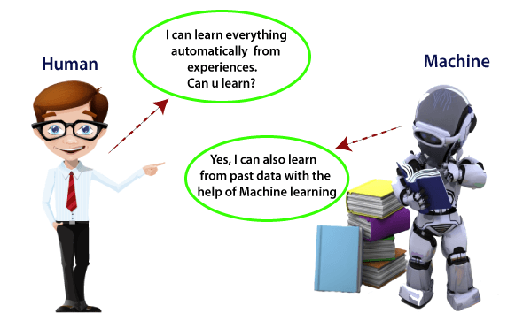

SVREC Technologies
SVREC TechnologiesMachine learning

A rapidly developing field of technology, machine learning allows computers to automatically learn from previous data. For building mathematical models and making predictions based on historical data or information, machine learning employs a variety of algorithms. It is currently being used for a variety of tasks, including speech recognition, email filtering, auto-tagging on Facebook, a recommender system, and image recognition.
What is Machine Learning (ML)?
In the real world, we are surrounded by humans who can learn everything from their experiences with their learning capability, and we have computers or machines which work on our instructions. But can a machine also learn from experiences or past data like a human does? So here comes the role of Machine Learning.
Introduction to Machine-Learning
A subset of artificial intelligence known as machine learning focuses primarily on the creation of algorithms that enable a computer to independently learn from data and previous experiences. Arthur Samuel first used the term "machine learning" in 1959. It could be summarized as follows:
Without being explicitly programmed, machine learning enables a machine to automatically learn from data, improve performance from experiences, and predict things.
Machine learning algorithms create a mathematical model that, without being explicitly programmed, aids in making predictions or decisions with the assistance of sample historical data, or training data. For the purpose of developing predictive models, machine learning brings together statistics and computer science. Algorithms that learn from historical data are either constructed or utilized in machine learning. The performance will rise in proportion to the quantity of information we provide
"A machine can learn if it can gain more data to improve its performance."

How does Machine Learning work
A machine learning system builds prediction models, learns from previous data, and predicts the output of new data whenever it receives it. The amount of data helps to build a better model that accurately predicts the output, which in turn affects the accuracy of the predicted output.
Let's say we have a complex problem in which we need to make predictions. Instead of writing code, we just need to feed the data to generic algorithms, which build the logic based on the data and predict the output. Our perspective on the issue has changed as a result of machine learning. The Machine Learning algorithm's operation is depicted in the following block diagram:

Features of Machine Learning:
Machine learning uses data to detect various patterns in a given dataset.
It can learn from past data and improve automatically.
It is a data-driven technology.
Machine learning is much similar to data mining as it also deals with the huge amount of the data.
Classification of Machine Learning:

At a broad level, machine learning can be classified into three types:
1.Supervised learning
2.Unsupervised learning
3.Reinforcement learning
Supervised Learning:
In supervised learning, sample labeled data are provided to the machine learning system for training, and the system then predicts the output based on the training data.
The system uses labeled data to build a model that understands the datasets and learns about each one. After the training and processing are done, we test the model with sample data to see if it can accurately predict the output.
The mapping of the input data to the output data is the objective of supervised learning. The managed learning depends on oversight, and it is equivalent to when an understudy learns things in the management of the educator. Spam filtering is an example of supervised learning.
Supervised learning can be grouped further in two categories of algorithms:
> Classification
> Regression
UnSupervised Learning:
Unsupervised learning is a learning method in which a machine learns without any supervision.
The training is provided to the machine with the set of data that has not been labeled, classified, or categorized, and the algorithm needs to act on that data without any supervision. The goal of unsupervised learning is to restructure the input data into new features or a group of objects with similar patterns.
In unsupervised learning, we don't have a predetermined result. The machine tries to find useful insights from the huge amount of data.
It can be further classifieds into two categories of algorithms:
> Clustering
> Association
Reinforcement Learning:
Reinforcement learning is a feedback-based learning method, in which a learning agent gets a reward for each right action and gets a penalty for each wrong action. The agent learns automatically with these feedbacks and improves its performance. In reinforcement learning, the agent interacts with the environment and explores it. The goal of an agent is to get the most reward points, and hence, it improves its performance.
The robotic dog, which automatically learns the movement of his arms, is an example of Reinforcement learning.